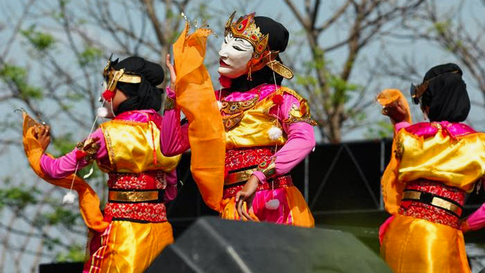

Sejarah Budaya - Tari Topeng Sinok Brebes
Tari Topeng Sinok Brebes
Sejarah Budaya Brebes

Tari Topeng Sinok adalah salah satu seni tari khas asal Brebes yang diciptakan oleh Suparyanto dari Dewan Kesenian Kabupaten Brebes yang menggambarkan perempuan yang cantik, luwes dan trengginas.
Tarian Topeng Sinok, menceritakan tentang perempuan Brebes, yang pada umumnya mereka merupakan adalah wanita pekerja keras.
Kecantikan, keluwesan, dan kegunaannya tak mengurangi kecintaan mereka pada alam dan pekerjaannya sebagai petani. Tari yang merupakan paduan bentuk seni Cirebon, Banyumas dan Surakarta tersebut,
seolah hendak mengatakan bahwa perempuan daerah perbatasan Jawa Tengah dan Jawa Barat ini bukanlah pribadi yang manja, cengeng, dan malas.
Topeng Sinok ini diproyeksikan untuk menjadi tarian khas yang nantinya akan dipromosikan dan diajarkan ke sekolah-sekolah dan dijadikan pelajaran muatan lokal di Kabupaten Brebes.
Koreografi tari Topeng Sinok mempunyai karakteristik dan keunikan yang tidak dimiliki tari topeng lainnya di Indonesia. Gerak yang dinamis mudah untuk diikuti oleh kalangan umum baik anak-anak maupun orang dewasa. Gerak yang dominan pada tari topeng Sinok adalah gerak murni atau pure movement. Riasan pada tari topeng Sinok terletak pada bentuk topengnya.Karakter yang cantik, lincah, dan gigih atau pekerja keras dianalisis menurut bentuk mata, hidung, alis dan mulutnya. Topeng ini menggambarkan kecantikan perempuan Brebes yang cantik dan gigih dalam bekerja yaitu sebagai petani. Busana yang digunakan berwarna cerah dan mencolok ini menggambarkan tari topeng Sinok berenerjik atau lincah dengan dengan karakter sedikit halus karena tarian ini merupakan tarian putri yang harus menjaga kelembutannya. Warna yang digunakan yaitu merah muda atau pink dan kuning cerah, serta dikombinasikan dengan warna emas pada beberapa perlengkapan busananya.
Our Networks
Untuk meningkatkan kualitas dan menjaga kelestarian
Kita bekerja sama dengan pemerintah